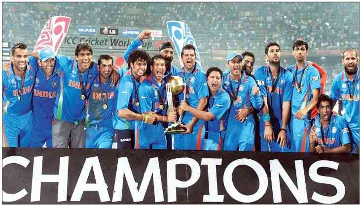

he 2011 ICC Cricket World Cup (officially known as ICC Cricket World Cup 2011) was the tenth Cricket World Cup. It was played in India, Sri Lanka, and (for the first time) Bangladesh. India won the tournament, defeating Sri Lanka by 6 wickets in the final at Wankhede Stadium in Mumbai, thus becoming the first country to win the Cricket World Cup final on home soil.[1][2] India's Yuvraj Singh was declared the man of the tournament.[3] This was the first time in World Cup history that two Asian teams had appeared in the final. It was also the first time since the 1992 World Cup that the final match did not feature Australia. All the matches were One Day Internationals, and all were played over 50 overs. Fourteen national cricket teams took part, including 10 full members and four associate members of the ICC.[4] The opening ceremony was held on 17 February 2011 at Bangabandhu National Stadium, Dhaka,[5] and the tournament was played between 19 February and 2 April. The first match was played between India and Bangladesh at the Sher-e-Bangla National Stadium in Mirpur, Dhaka.[6] Pakistan was also scheduled to be a co-host, but after the 2009 attack on the Sri Lanka national cricket team in Lahore, the International Cricket Council (ICC) cancelled that,[7] and the headquarters of the organising committee, originally in Lahore, was transferred to Mumbai.[8] Pakistan was to have held 14 matches, including one semi-final.[9] Eight of the games (including the semi-final) were awarded to India, four to Sri Lanka, and two to Bangladesh
|  | |
| World Cup 2011 | World Cup 2011 Final Match |